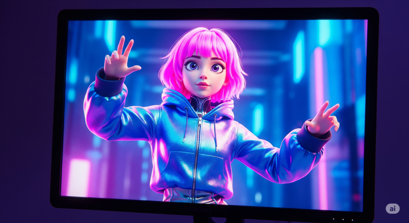

단 29개의 영상으로 5억 뷰, 월 수익 1,000만 원 이상. 믿기시나요? 심지어 130만 구독자를 보유하고 7억 뷰에 가까운 조회수로 월 5만 달러(약 6,800만 원) 이상을 버는 채널도 있습니다. 이 채널들의 공통점은 얼굴을 전혀 공개하지 않고, 100% AI로 영상을 제작한다는 점입니다.
오늘 이 글에서는 여러분이 이 놀라운 성공을 그대로 재현할 수 있도록, AI를 활용한 '얼굴 없는 유튜브 채널' 시작부터 첫 바이럴 영상 제작까지의 모든 과정을 단계별로 상세하게 알려드립니다. 단 20분의 작업만으로 AI 툴을 활용해 멋진 영상을 만드는 완전한 청사진을 제공할 것입니다. 시작하기 전에, 이 글의 모든 단계를 놓치지 않도록 집중해 주세요!
성공의 열쇠: 시청자 유지율(Retention)의 비밀
얼굴 없는 채널로 성공하기 위해 가장 먼저 알아야 할 것은 바로 '시청자 유지율'입니다. 이것이 여러분의 영상을 성공시키거나 실패하게 만드는 결정적인 요소입니다. 시청자 유지율은 시청자가 여러분의 영상을 얼마나 오래 시청하는지를 나타내는 지표입니다.
유튜브 알고리즘은 시청자를 플랫폼에 최대한 오래 머물게 하는 영상을 선호합니다. 만약 여러분의 영상이 높은 유지율을 기록한다면, 유튜브는 그 영상을 더 많은 사람에게 추천하게 되고, 결과적으로 '바이럴'이 되는 것이죠. 실제로 저조한 성적의 영상은 10%의 낮은 유지율을 보인 반면, 100만 뷰를 달성한 영상은 40%의 높은 유지율을 기록했습니다.
어떻게 높은 유지율을 만들 수 있을까요?
정답은 탄탄한 스토리라인에 있습니다. 모든 영화처럼, 영상에도 시작과 끝, 그리고 그 사이를 잇는 흥미진진한 이야기가 있어야 합니다. 시청자의 궁금증을 자아내고 영상 끝에서 해답을 제시하는 구조를 만들어야 합니다.
AI 영상 제작 완벽 가이드 (5단계)
이제 본격적으로 AI를 이용해 바이럴 영상을 만드는 전체 과정을 살펴보겠습니다. 우리는 새로운 AI 도구들을 활용해 이 모든 과정을 간단하게 처리할 것입니다.
1단계: 바이럴 스토리라인 생성 (Deepseek)
가장 먼저, 시청자를 사로잡을 스토리를 만들어야 합니다. 우리는 최신 AI 도구인 Deepseek을 사용할 것입니다. 이 도구는 마치 전문 작가가 쓴 것처럼 자연스러운 스토리라인을 생성해 줍니다.
- Deepseek에 접속해 계정을 만듭니다.
- 미리 준비된 프롬프트 템플릿에 여러분의 영상 주제와 캐릭터 정보를 입력합니다. (예: 활발한 토끼 '빙키'가 초원을 뛰어다니는 이야기)
- 프롬프트를 Deepseek에 붙여넣고 스토리를 생성합니다.
- 생성된 스토리를 구글 문서 등에 복사한 후, 반드시 직접 읽어보며 AI가 만든 어색한 부분을 수정해야 합니다. 시청자들은 AI가 쓴 글을 금방 알아채기 때문에, 인간적인 감성을 더하는 과정이 필수적입니다.
2단계: 현실적인 AI 목소리 입히기 (ElevenLabs)
완성된 대본을 생생한 목소리로 바꿔줄 차례입니다. 업계 최고로 평가받는 AI 음성 생성 도구 ElevenLabs를 사용합니다.
- ElevenLabs에 접속하여 텍스트 입력창에 수정된 대본을 붙여넣습니다.
- 오른쪽 목록에서 여러분의 스토리와 어울리는 목소리를 선택합니다. (예: Denzel)
- 'Generate' 버튼을 눌러 음성을 생성하고, 미리 들어본 후 마음에 들면 다운로드합니다.
3단계: 시선을 사로잡는 영상 소스 제작
이제 스토리에 맞는 시각 자료를 만들 차례입니다. 정적인 이미지를 생성한 후, 이를 동적인 영상으로 변환하는 2단계 과정을 거칩니다.
3-1. 이미지 생성 (Leonardo.ai)
먼저, 최고의 AI 이미지 생성기 중 하나인 Leonardo.ai로 고품질 이미지를 만듭니다.
- Deepseek을 이용해, 앞서 만든 스토리 각 부분에 맞는 이미지 생성 프롬프트를 만듭니다.
- Leonardo.ai에 접속해 이미지 생성기로 이동합니다.
- 설정을 조정합니다. (예: 모델 'Fenix 1.0', 스타일 '3D Render', 이미지 비율 '16:9' - 표준 유튜브 영상 크기)
- Deepseek에서 만든 이미지 프롬프트를 하나씩 붙여넣어 필요한 모든 이미지를 생성하고 다운로드합니다.
3-2. 이미지에 생명 불어넣기 (Pixverse)
이제 정적인 이미지들을 살아 움직이는 영상으로 만들 시간입니다. 새로운 AI 애니메이션 툴 Pixverse는 디즈니 애니메이터를 긴장시킬 만큼 사실적인 애니메이션을 만들어 냅니다.
- Pixverse에 접속하여 'Create'를 클릭합니다.
- 생성한 이미지를 하나씩 업로드하고, 어떻게 움직이길 원하는지 간단한 프롬프트(예: a bunny hopping)를 작성합니다.
- 'Create' 버튼을 누르면 이미지가 완전히 움직이는 영상으로 변환됩니다.
- 결과물이 마음에 들 때까지 몇 번이고 다시 생성할 수 있습니다. 완성된 영상들을 모두 다운로드합니다.
4단계: 맞춤 배경음악 제작 (Suno.ai)
수천 개의 채널이 사용하는 흔한 배경음악 대신, 우리 영상만을 위한 맞춤 음악을 만들어 봅시다. Suno.ai를 사용하면 간단한 프롬프트 입력만으로 가능합니다.
- Deepseek을 열고, 우리 영상의 스토리에 어울리는 음악에 대한 설명을 요청하는 프롬프트를 입력합니다.
- 생성된 음악 설명 프롬프트를 복사하여 Suno.ai에 붙여넣습니다.
- 'Generate'를 클릭하면 몇 초 만에 맞춤 제작된 노래가 완성됩니다. 마음에 드는 버전을 다운로드하세요.
5단계: 영상 편집의 모든 것 (CapCut)
이제 모든 재료(목소리, 영상, 음악)가 준비되었습니다. 무료이면서도 강력한 편집 툴 CapCut을 사용하여 모든 것을 하나로 합쳐봅시다.
- 음성 편집: 먼저 음성 파일을 타임라인에 올리고, 불필요한 침묵 구간을 잘라내어 영상의 속도감을 높입니다.
- 영상 배치: 애니메이션 영상들을 음성 내용에 맞게 순서대로 배치합니다. 영상 길이가 짧다면, 클립을 복제한 후 두 번째 클립을 '역재생(Reverse)'하여 자연스럽게 길이를 늘리는 트릭을 사용하세요.
- 전환 효과: 각 영상 클립 사이에 '블러'나 '페이드' 같은 깔끔한 전환 효과를 추가하여 컷이 부드럽게 이어지도록 합니다.
- 자동 자막 생성: CapCut의 '자동 캡션' 기능을 사용해 자막을 만듭니다. (이 기능은 Pro 버전에서만 사용 가능할 수 있습니다.) 시청자의 눈길을 끌도록 예쁜 템플릿과 애니메이션을 적용하세요.
- 사운드 디자인: 배경음악과 다양한 효과음(SFX)을 추가합니다. 이때 목소리가 잘 들리도록 음악과 효과음의 볼륨을 적절히 조절하는 것이 매우 중요합니다.
- 최종 내보내기: 해상도 1080p, FPS 60으로 설정하여 최고 품질로 영상을 내보냅니다.
광고 수익을 넘어, 진짜 돈 버는 법: 제휴 마케팅
많은 사람들이 얼굴 없는 채널의 주 수입원이 광고 수익이라고 생각하지만, 이는 사실과 다릅니다. 광고 수익은 추가 수입일 뿐, 진짜 큰돈을 버는 방법은 따로 있습니다. 바로 제휴 마케팅(Affiliate Marketing)입니다.
여러분의 영상이 인기를 얻으면, 시청자들은 "어떤 도구를 사용해서 만들었나요?"라고 질문하기 시작합니다. 이때가 기회입니다.
제휴 마케팅 실행 방법:
1. ElevenLabs, Leonardo.ai 등 영상 제작에 사용한 AI 도구 웹사이트에 접속합니다.
2. 'Affiliate Program(제휴 프로그램)'에 가입하여 고유한 링크를 받습니다.
3. 유튜브 영상 설명란에 이 링크들을 포함시킵니다.
4. 시청자가 여러분의 링크를 통해 해당 서비스에 가입하면, 여러분은 일정 비율의 수수료를 받게 됩니다.
이 방법은 고객 지원이나 제품 개발 없이 다른 사람의 제품을 판매하며 수익을 창출하는 강력한 비즈니스 모델입니다. 여러분의 채널을 단순한 취미가 아닌, 마케팅 플랫폼으로 바라본다면 수익을 극대화할 수 있습니다.
오늘 알려드린 이 청사진을 그대로 따라 한다면, 여러분도 성공적인 AI 기반 얼굴 없는 유튜브 채널을 운영할 수 있습니다. 이 모든 정보가 벅차게 느껴질 수도 있지만, 한 걸음씩 차근차근 실행에 옮겨보세요. 여러분도 할 수 있습니다!